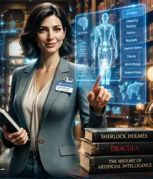

Spoken dialogue
Evelyn will converse about AI pioneers, computing history, robotics, inventions and questions from her visitors, with voice and animated presentation once validated.
Kira Labs / Technology Demonstrations
Meet a digital historian designed to explore the story of artificial intelligence and technology—and to develop interests beyond her primary area of study.
Evelyn is an in-development Kira Labs demonstration bringing together a locally installed Qwen 3.5:9B model, a curated research library, persistent notes, life-loop reading, and a recognizable conversational identity.
This is a preview of intended capabilities, not a claim that installation, conversation, voice, library learning or persistence have passed release testing. There is no active installer or public release date yet.

Three distinct information paths
The intended design separates conversations from locally stored reflections and from evidence-backed historical records. This is a proposed architecture, not a demonstration of consciousness or guaranteed factual accuracy.
Evelyn will converse about AI pioneers, computing history, robotics, inventions and questions from her visitors, with voice and animated presentation once validated.
A proposed internal note space for interests, questions and learning plans, kept separate from her spoken dialogue and protected by user-controlled local settings. This refers to an application memory channel, not a claim about subjective thought.
Historical claims are intended to connect to book titles, page references and dated sources. Conflicting accounts or uncertainty should be labeled clearly instead of presented as established truth.
The library / life loops
Evelyn's planned starter library focuses on AI and technology history. It also includes selected literature so her reading is not confined to professional research.
Books will be supplied only from editions Kira Labs can lawfully distribute. Fiction is stored as fiction, never automatically treated as historical fact.
Local launcher / proposed flow
Development status / October 2026
The current development reports describe Evelyn as a separate Qwen-based AI and technology historian in progress. A historical Kira conversation test harness has been located for adaptation, but Evelyn's own installer, generated dialogue, voice, animated head, memory persistence and repeated conversation tests are not yet confirmed as successfully completed.
See Evelyn among Kira Labs projects →